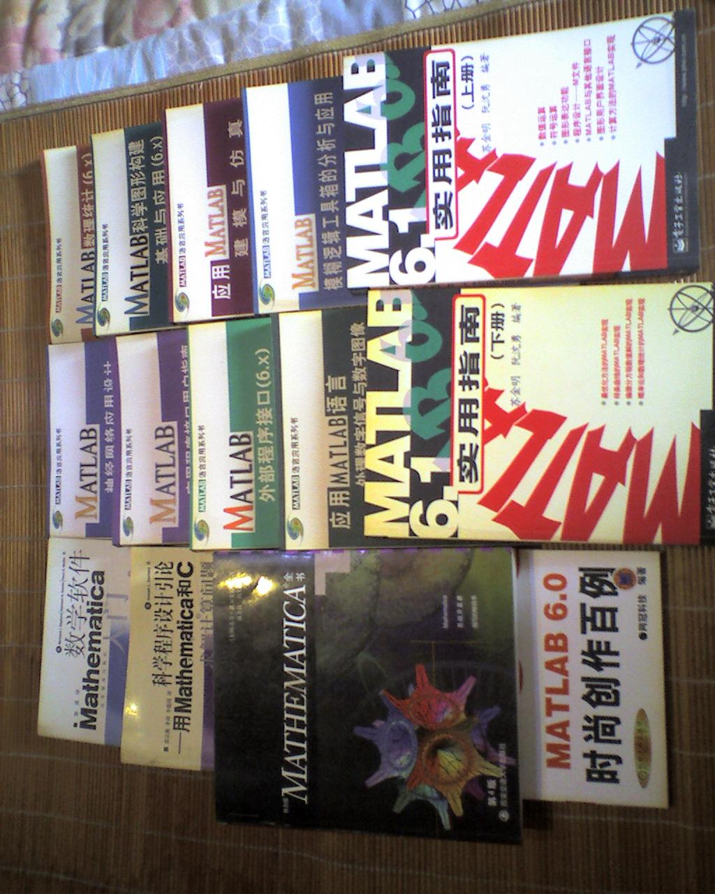
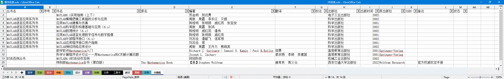
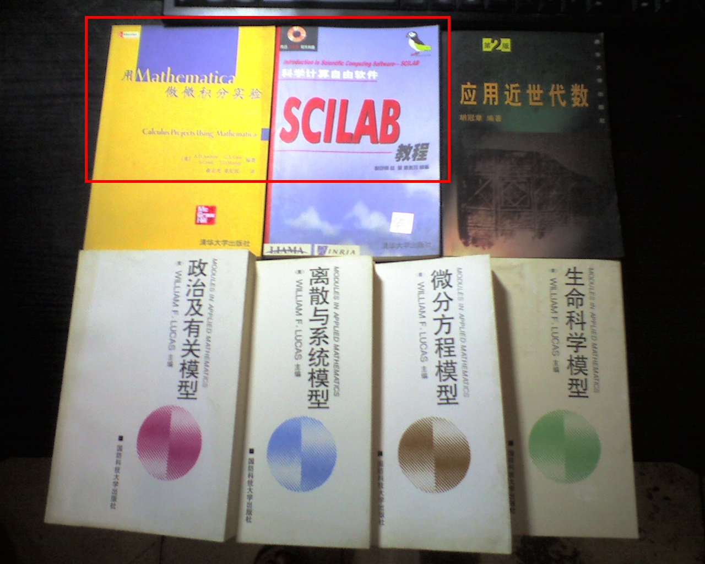
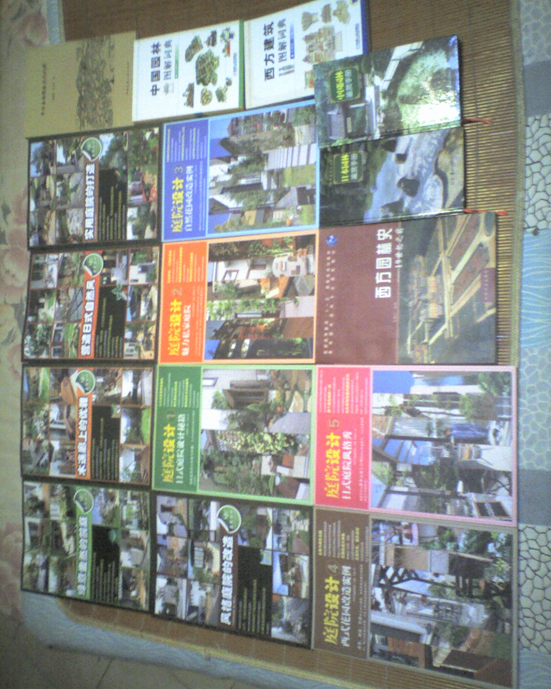
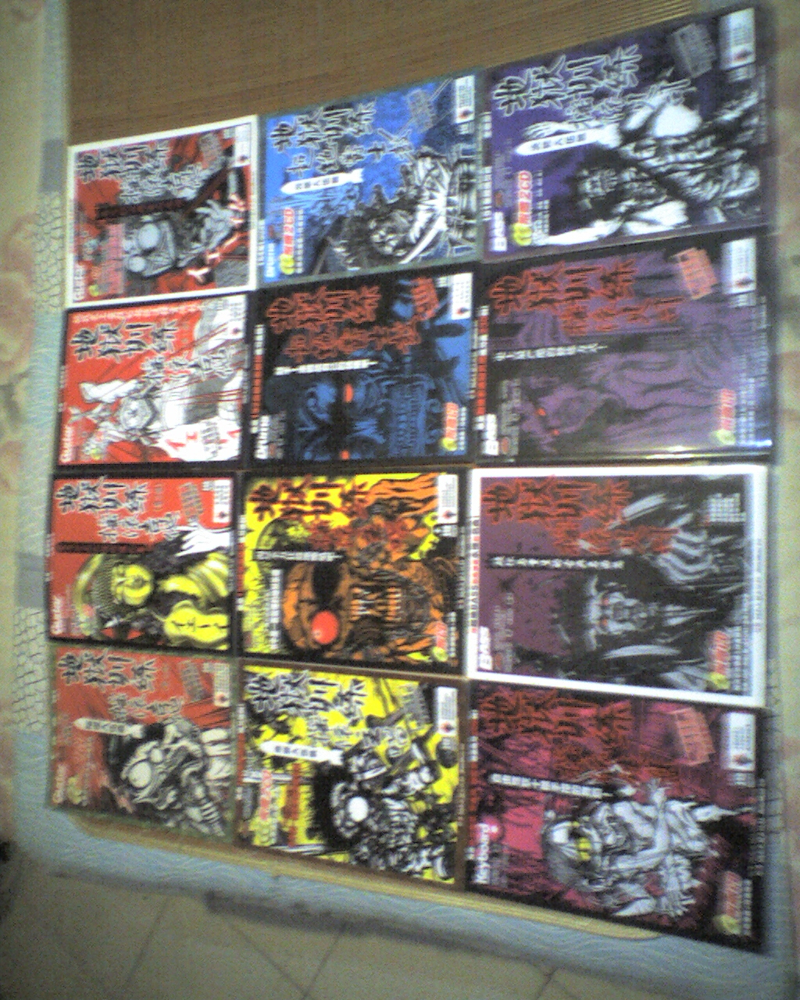
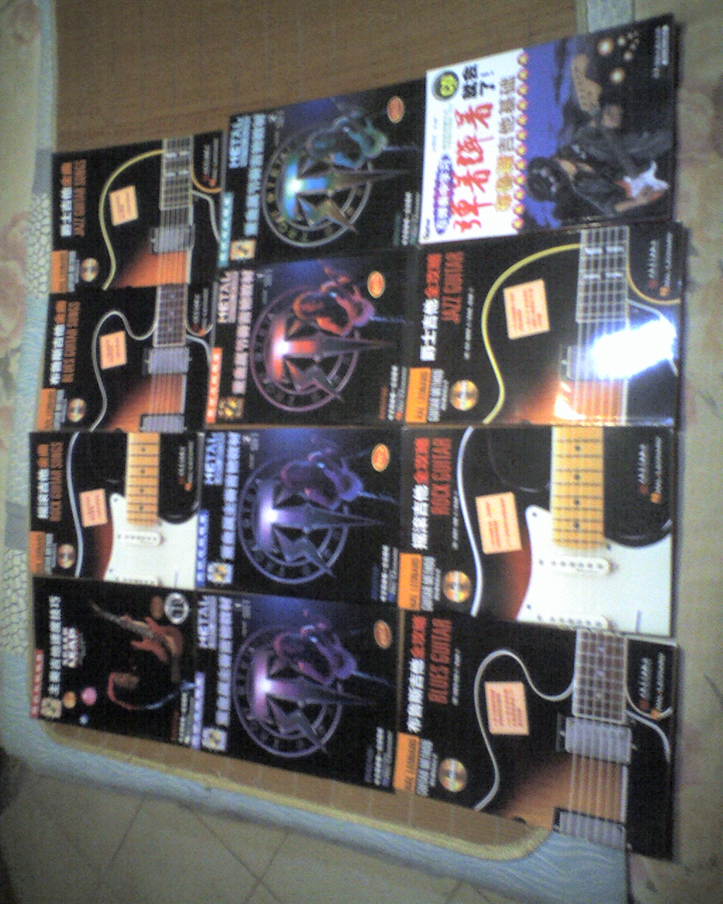
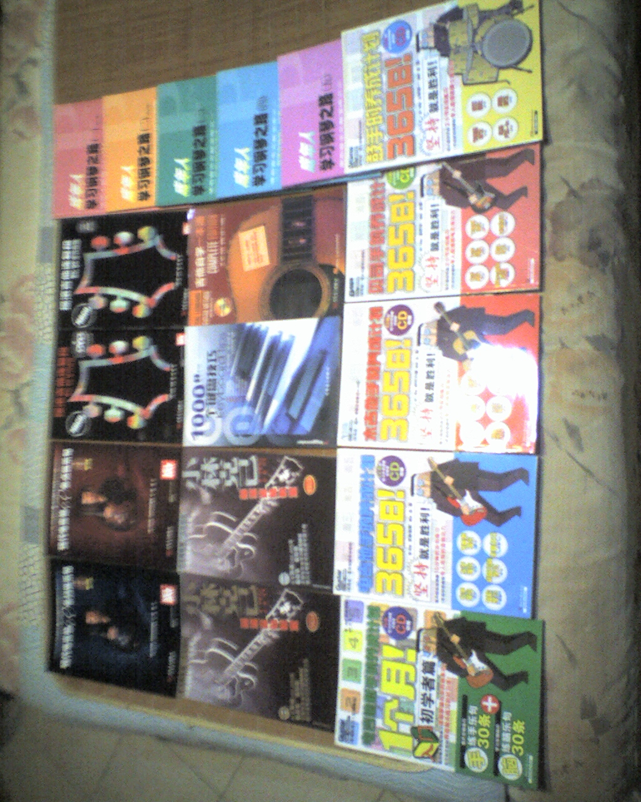
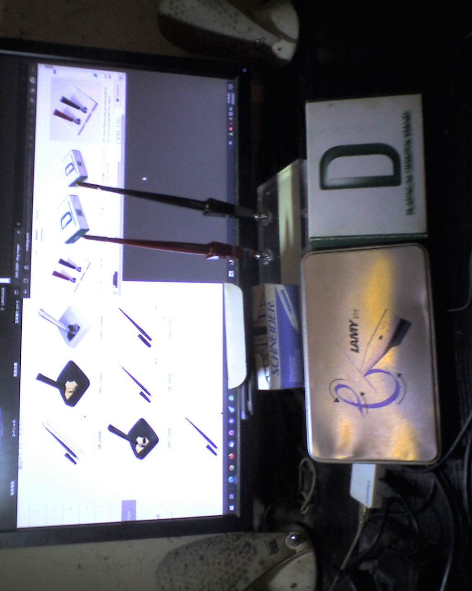
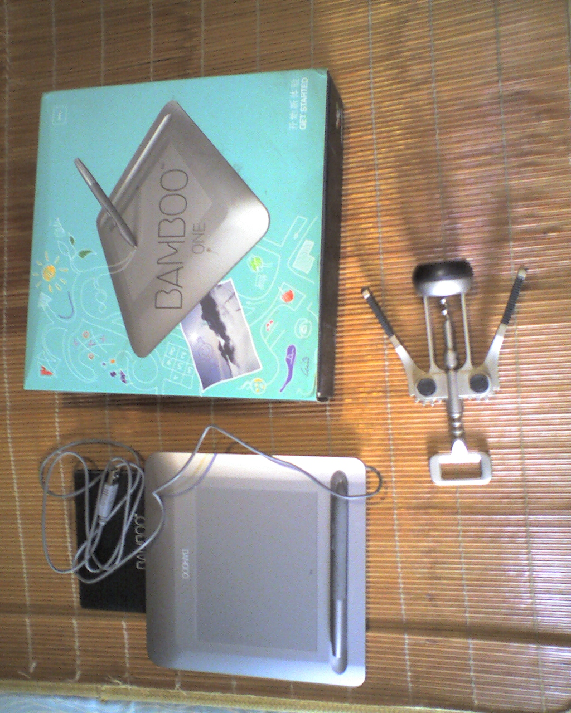

fanhan-inside
前情提要：
长话短说，本篇日志的缘起是下午整理堆放在书柜顶上的一堆吃灰多年的实体书，好歹都擦干净摆进开放式书架了，虽然还是吃灰，但看上去总比之前顺眼点。
因为最近关注重点（「囧斋之書」站点的目的就是试验技术型文档的发布）的缘故，率先翻出来的是二十一世纪初刚开始工作时购买的Matlab/Mathematica相关书籍。当时就是月光族，每月工资除了吃喝拉撒睡之外就是买书，虽然当时觉得挺贵，但现在回顾还是挺划算的。
于是用触动楼上人渣G点导致砸凳子跺脚的Sharp智能手机（操作系统乃Microsoft Windows Mobile 5 for PocketPC）拍了一张照片：
范某摄影备份于此

然后翻出久违的「图书目录.ods」登录这些书目。这个目录已经是第三次重建了，2008年以来的书目由于更换计算机而失踪，截止到2017年的书目由于计算机钦定死机致死而消失，当时家贼已经把古拉格北里住处的绝大部分藏书都搬回古拉格南里住处了，于是重建的目录登录内容并不多。这里只列出与「科学计算」有关的部分，也就是照片上出现的书籍：
范某截图备份于此

在《范版数学恶补记》开头几篇就提到了，准备用SageMath或其它开源替代品重写一版《托马斯微积分》或其它精通盎语の钦定学霸到处炒作推销的大名如雷贯耳的面向工科专业的还能走通教育口人脉向全国各大院校摊派的精品数学教材。而在《三自课件运动》当中使用Maxima重写面向数学专业的《微分几何》（第二版）附录三当中Mathematica代码，可以认为是一种探路的先行尝试。
开场白先这样，后面还有其它领域的实体书亮相。
范某摄影备份于此

图中红色方框内的两本小书，是刚翻出来的，之前拍照的时候想起来似乎还有两本，但是由于开本太小，忘了塞到哪里与什么为伍了。其它五本是凑够一张照片用的，购买于2000年海淀图书城九章数学书店。而这两本出版于2003年，大概是在网上买的吧，忘了。
其中一本，还是讲述如何运用昂贵的商业软件「做实验」，可见财大气粗の大手名校一切与国际接轨向灯塔看齐。
而另外一本的序二，就是法兰西国立信息与自动化研究院（INRIA）的院长、首席执行官写的，弘扬自由精神。这个项目是有官方预算保障的，虽然不算「大国工程」那种全国一盘棋心往一处想劲往一处使横下一条心不惜一切代价……也要咋嘀之类。这本书，是当时到现在市面上能找到的唯一的一本关于SciLab的简体中文书籍，虽然内容不算充沛，但是当成「Getting Start」那种入门课程还是很恰当的，后面直接接上开头贴图的那些「硬核应用」可也。
提醒读者要严密的考虑问题，Maxima、GNU Octave乃至SageMath，也是在以美帝灯塔国数学和计算机从业者为主力的情况下蓬勃发展起来的，只不过没有官方预算罢了，民间赞助的「同工」和自带干粮的「义工」也是极大充沛。
fanhan-inside
接下来是《设定集》之十五〈镜花水月梦幻泡影〉的参考资料，之前在《豆瓣日记［20190620］返璞归真》当中已经列过一次当时手头能抓到的实体书之书目了。
今天翻出来的也不是全部，有些现当代建筑理论与实践与《设定集》年代背景不符暂时没必要参考，有些过于古典如《建筑十书》的俩版本还没来及用到（说过了四十余年来不给我个说法，苏修美帝尔六千五百年来我就给人民群众一个说法），得等到相关角色们「回忆杀」「嘴炮遁」的时候涉及耶少爷下凡前后那段时间各方势力动向，才有用武之地。
不啰嗦，直接上照片，老迈年高旧手机的摄像像质量各位就甭苛求了：
范某摄影备份于此

譬如《设定集》正文的形成，当时参考了大量的资料、素材，结果却是一小段。已经在「作品相关」当中展现出来了，哪怕只看篇幅。这里不再重复。
所以，倚仗「“海里有人”“海边有人”“手眼通中央军委/政法委”」的人脉，到处「复制并成功」「你写一段我抄一段」瞎编乱造注水掺沙子就能「一字百元年入四千万」的钦定文豪，最好还是不要腆着脸碰瓷企图与我相提并论，如果它们还有脸（这个，基本上，很难）的话。
fanhan-inside
接下来是以前提到过的实体书素材，是亚马逊中国电子商务平台海外代购的。
范某摄影备份于此
前因后果在《三字造字运动》的「缘起部分」，其中十本字体共240种的购买记录据相关信息在《网络字体测试》页面中备案。
fanhan-inside
接下来是音乐相关的部分书籍：
范某摄影备份于此



这也不是全部，在《三自运动插曲：嗟叹之不足故咏歌之》结尾提到的人民音乐出版社《音乐自学丛书》「音乐学卷」「作曲卷」之类就没有提及。还有七本钢琴练习曲的红皮大册子曲谱，因为没必要提及，市面上任何一个培训班的教师都会贯口活儿《报谱名》，「学生家长」听了两眼放光，祖国的花骨朵听了两眼冒金星。
今后整理书籍配套光盘的时候，也会把相关内容拍照上传，各位那时候会看到，比方说《中世纪音乐》两张光盘还在盘包里面安安静静的趴着，前几天收拾杂物时刚看见。
买了键盘相关书籍是为了《设定集》十二平均律线索，各位读者肯定都猜到了。而买了大批摇滚吉它相关书籍，一方面是为了《异闻录》当中比重不算太大的部分内容，另一方面则是2014年在屎绿配色的国际化大都市「华语第一精日论坛」相关话题当中与人争论。
当时提及「bass」顾名思义就是低音，只弹根音确实不用走脑子，结果有人就用什么「贝斯地狱训练」之类书籍举例说「也不是那么简单」，再往后吵起来了，我说通常古典音乐用低音提琴拨弦，木制贝斯也有但效果不好就不咋流行，抬杠就是「弹棉花也算超重低音」。
就事论事，当时那个帖子里面就有其它第三方网友贴了个搞笑图，说乐队解散之后各个岗位都在干啥，尤其是贝斯和鼓手，网上仔细找说不定还能找到。
说过了我对于音乐美术之类需要一万小时才能登堂入室的领域「眼高手低」，在那之前就有娱乐至死の逗哔嘲笑「嗤。你手低我们都知道了，我看眼高也未必」……现在各位读者知道我敢说自己「眼高」的底气在哪儿了么？虽然这话在年满三十周岁忽然感觉融汇贯通之后又过了一段时间才敢说。
fanhan-inside
顺便拍一张「差生文具多」照片放上来：
范某摄影备份于此

如图所示，红黑双杆台笔「プラチナ」原厂已经停产，现在正摆在我的桌面上「装哔」。
旁边是Lamy Joy，一盒书法文具套装，里面一根笔杆共三个笔尖，都是平头，粗细不一。
上面是德制施耐德墨胆一盒，以及一根平头施耐德钢笔，也是书法用，其实没多贵，比之前买的日笔日墨都便宜。
因为字母书法需要平头才有欧美原厂出品，日笔也有字母书法用笔，百乐的ERABO，不是平头而是分叉的软笔尖，写花体专用。
为啥买这堆东西？为了亲身体验吖，没有调查就没有发言权，码字总不能空口白牙说胡话吧？买不起另说，比方说烟斗之类。不过可以消费降级，买不起奢侈品万年笔还可以用普通钢笔凑活，抽不起烟斗烟丝还可以用爆珠款卷烟凑活。已经在《设定集》正文当中出现了相关情节，注释中也展开解读了。
然后家贼一边破门而入看见什么感兴趣都顺走，包括但不限于买茶叶送的赠品杯子，一边见我一次喷我一次「你怎么成天乱花钱呢」。
那么什么才不算「乱花钱」？非得一万块钱买三罐天山雪蜜，或者四千五百块钱买六罐山东清真罐头？哎呀还得打着订购一年骆驼奶的幌子，然后一拍脑袋「又想了一下还是不订了，钱就当打水漂了」。
或者必须出七万元人民币交去年冬天的供暖费，否则西气东送的管道所用涡轮机就会三天两头维修。
fanhan-inside
刚才整理杂物，翻出来两件家伙事儿：
范某摄影备份于此

一个是手写板，一个是红酒开瓶器。
前者是在与美术兲才们扯淡的时候为了有发言权而进行调查所购买的，面积不大，体验一下总是可以。后者则是在力所能及的范围内，为了码字情节需要而体验，喝过的几瓶红酒不是很好所以不算太贵，但都是正经带着软木塞的那种，不是「简装版」甚至「勾兑酒精饮料」。
不为什么，咱「言必信行必果硁硁然」的小人有个职业习惯，唤作「无一字无来历」。